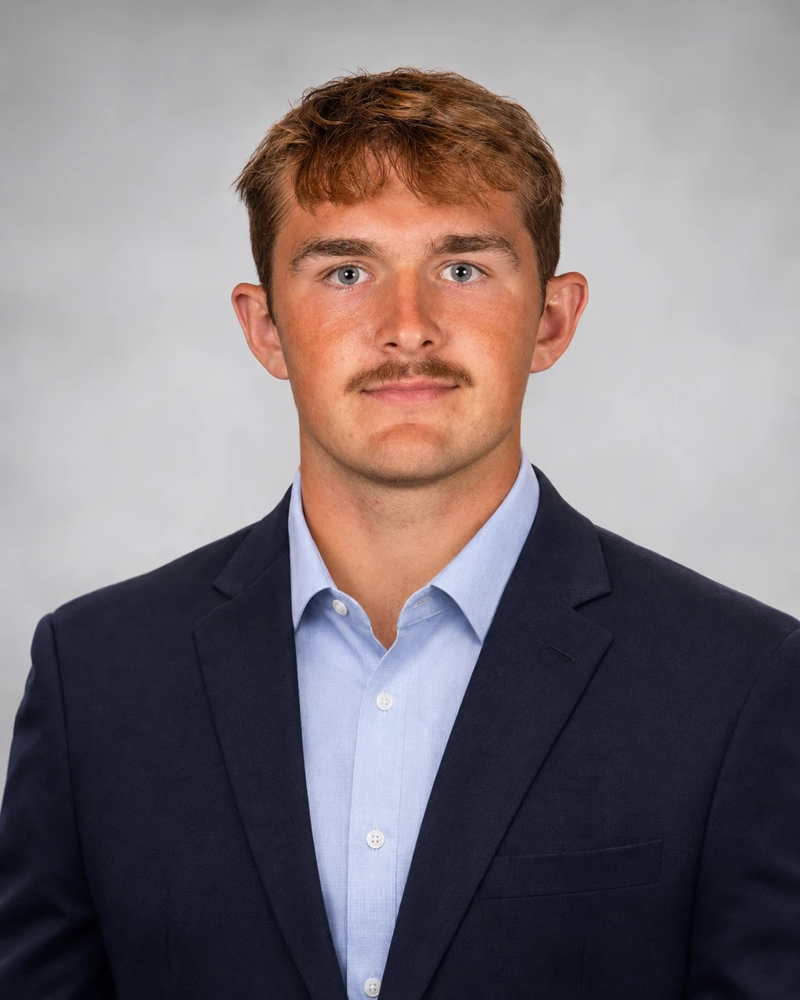

Ethan Moczulski
Communicator. Division I placekicker. Builder.
I am a fifth-year student in Agricultural Leadership, Education, and Communications at the University of Illinois Urbana-Champaign, concentrating in Agricultural Communications, and the placekicker for Illinois football. I have competed at three Power Four programs, Texas A&M, Illinois, and Washington, and I hold the Illinois school record with a 59-yard field goal. Along the way I co-founded a software company, built web platforms for two clients, and learned to trade futures with my own capital under fixed risk rules.
My plan is to kick professionally for as long as the game lets me, and to build businesses after that. What ties everything together is communication. Whether I am explaining a product to a business owner who does not care about the technology, planning a campaign for Midwest Dairy, or writing a crisis plan for a medical group, the job is the same: understand the audience, say the true thing clearly, and earn trust.
Explore the portfolio
Strategic Communication
A Midwest Dairy campaign pitched to a real client, a live-event social strategy for Santa's Wonderland, and an audience memo for French young farmers.
View artifacts →Research, Writing & Crisis Communication
A critical issue analysis of the 2026 beef import expansion, a crisis plan for Christie Clinic, a food-systems map, and journalism from AGCM 220.
View artifacts →Building & Markets
plumline.ai, the KT Recruiting platform, the Maxx Group website, and a disciplined approach to trading Nasdaq-100 futures.
View artifacts →Athletics & Leadership
Five seasons of Division I football across three programs, a youth kicking camp, and community service with Illinois football.
View artifacts →Professional values
How I approach work: a professional philosophy built on discipline, honesty, and transformational leadership, plus a reflection on the course that changed how I think about communication.
Read my philosophy →Contact
- Email: ethan.moczulski@icloud.com
- LinkedIn: linkedin.com/in/ethan-moczulski-2b49b63ba
- Location: Champaign, Illinois